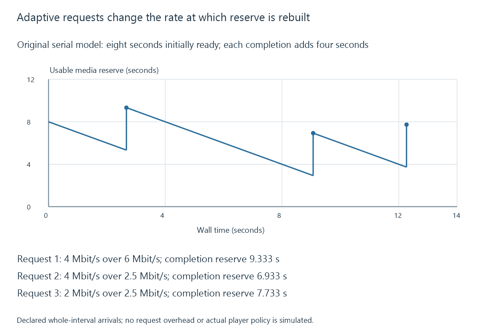

Adaptive bitrate streaming and representation selection
Adaptive bitrate streaming selects among suitable representations of the same programme timeline to balance presentation quality, delivery capacity and playback reserve.
Adaptive bitrate streaming lets a player choose different representations of the same programme as conditions change. A lower-rate representation generally needs fewer delivered bits for the next media interval. A higher-rate representation can provide more picture information when delivery and decoding can sustain it.
The player needs alternatives it can use at corresponding programme times. A single stream whose server-side encoder was assigned a bitrate at startup is a different arrangement.
A ladder provides real alternatives
Imagine an original ladder with total nominal media rates of 2, 4 and 8 Mbit/s. Each representation covers the same programme, with aligned four-second intervals. For this simplified example, audio is included in those totals.
| Representation | Nominal rate | Four-second payload at that rate |
|---|---|---|
| Low | 2 Mbit/s | 1 MB |
| Middle | 4 Mbit/s | 2 MB |
| High | 8 Mbit/s | 4 MB |
The player is choosing the encoded representation for an interval. It is not instructing an existing eight-Mbit/s segment to become smaller while keeping the same bytes.
Actual segment sizes vary, and a published rate attribute has the meaning defined by its manifest format. The table deliberately uses constant-rate payload estimates to make the scheduling arithmetic visible.
Throughput is evidence for a decision
A player's useful download throughput is calculated from a particular transfer and timing interval. Request setup, connection reuse, cache hits and pauses can affect how that observation should be interpreted.
An original teaching policy might choose the highest supported ladder rate no greater than 70% of a six-Mbit/s throughput estimate:
6 × 0.70 = 4.2 Mbit/s selection budget
Highest ladder rate within 4.2: 4 Mbit/s
The margin leaves room for uncertainty and changing conditions. It is not a standard HLS requirement, a dash.js default or an Emby setting.
A real policy can also consider how much media is buffered, recent fluctuations, decoder load and the cost of changing quality. The dash.js primary documentation provides a concrete implementation example with throughput and buffer-based rules, plus additional rules that can influence selection. Those mechanisms establish that adaptation is a player policy, not one fixed rule prescribed by a manifest.
A throughput sample needs a measurement interval
An original one-MB payload has eight million bits. Assume its active byte transfer takes two seconds and request/setup adds another 0.2 seconds.
Active payload rate = 8,000,000 / 2 = 4,000,000 bit/s
Whole-request rate = 8,000,000 / 2.2 ≈ 3,636,364 bit/s
Both calculations describe the same request with different intervals. A policy needs to know which observation its estimator uses and how request overhead affects the next interval.
Shorter media intervals can make that overhead more significant relative to payload time. A period deliberately spent idle between requests also should not be silently mixed into an unrelated active-transfer measurement. The dash.js throughput reference describes implementation-specific measurement and averaging options; the calculation here does not assign it one universal formula.
The buffer explains why adaptation helps
Use an original serial-retrieval model with eight seconds of ready media before the next request. Playback consumes one media second per wall second. Each completed request contributes a four-second interval, and its entire payload becomes usable at completion.
No extra request delay, overhead or stall occurs in these three steps:
| Request | Selected rate | Useful throughput | Retrieval time | Ready reserve after completion |
|---|---|---|---|---|
| First | 4 Mbit/s | 6 Mbit/s | 2.667 s | 9.333 s |
| Second | 4 Mbit/s | 2.5 Mbit/s | 6.400 s | 6.933 s |
| Third | 2 Mbit/s | 2.5 Mbit/s | 3.200 s | 7.733 s |
For the second request:
Payload = 4 media seconds × 4 Mbit/s = 16 Mbit
Retrieval = 16 / 2.5 = 6.4 wall seconds
New reserve = 9.333... - 6.4 + 4 = 6.933... seconds
The connection slowed after the earlier estimate. Reserve covered the unexpectedly long transfer. The following request uses the lower-rate representation and arrives in less time than it contributes, so reserve grows again.

This model illustrates a delayed response to changed conditions. It does not simulate an actual player's estimator, request abandonment or incremental fragment use.
A policy that always spends the full latest measured rate has little room for a worse next interval. A policy that always selects the lowest quality protects reserve at the expense of presentation quality. Adaptation manages that tradeoff across the viewing, including the time required to learn that conditions changed.
Switching needs a compatible timeline
The next selected representation must continue at the intended programme moment. Suitable access points, timing alignment, codec configuration and the receiver's switching capabilities determine whether that transition works.
Changing from one representation at time twelve to another whose next interval begins at fourteen creates a gap. Switching to an incompatible codec configuration can require reinitialization or may not be supported by that player path at all.
Packaging conventions such as CMAF can constrain tracks into suitable switching sets. Manifest labels alone do not repair a mismatch between the actual encoded tracks.
Buffered material also affects when the viewer sees the change. If the player retains several intervals of the former quality, a newly requested lower-rate interval can appear later on the playhead. Some implementations can replace buffered material under particular policies; others continue presenting what they already have.
Quality controls can act at different places
An app's “Auto” choice can mean automatic source selection, a negotiated session bitrate, an adaptive player policy or another app-specific behavior. Its label alone does not show which mechanism operates.
In Emby, playback information, the delivery manifest and the actual representation requests provide different pieces of that evidence. A server quality limit can constrain which output is offered. A client-switchable ladder additionally requires alternative representations for the same session timeline.
See Also
- HTTP Live Streaming (HLS)
- MPEG-DASH and its media presentation description
- Buffering, ready media and playback reserve
- Playback quality limits and output constraints
- Media source selection for playback
- Low-latency streaming and the live presentation delay